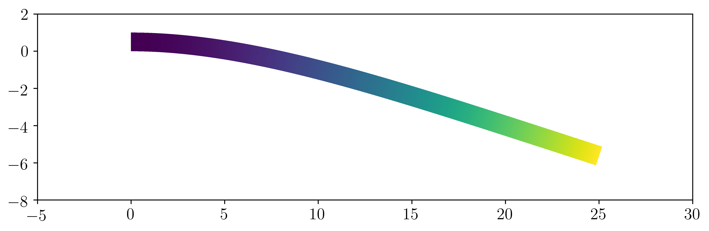

2D linear elasticity¶
Introduction¶
In this first numerical tour, we will show how to compute a small strain solution for
a 2D isotropic linear elastic medium, either in plane stress or in plane strain,
in a tradtional displacement-based finite element formulation. The corresponding
file can be obtained from 2D_elasticity.py.
See also
Extension to 3D is straightforward and an example can be found in the Modal analysis of an elastic structure example.
We consider here the case of a cantilever beam modeled as a 2D medium of dimensions
\(L\times H\). Geometrical parameters and mesh density are first defined
and the rectangular domain is generated using the RectangleMesh function.
We also choose a criss-crossed structured mesh:
from __future__ import print_function
from fenics import *
L = 25.
H = 1.
Nx = 250
Ny = 10
mesh = RectangleMesh(Point(0., 0.), Point(L, H), Nx, Ny, "crossed")
Constitutive relation¶
We now define the material parameters which are here given in terms of a Young’s modulus \(E\) and a Poisson coefficient \(\nu\). In the following, we will need to define the constitutive relation between the stress tensor \(\boldsymbol{\sigma}\) and the strain tensor \(\boldsymbol{\varepsilon}\). Let us recall that the general expression of the linear elastic isotropic constitutive relation for a 3D medium is given by:
for a natural (no prestress) initial state where the Lamé coefficients are given by:
In this demo, we consider a 2D model either in plane strain or in plane stress conditions.
Irrespective of this choice, we will work only with a 2D displacement vector \(\boldsymbol{u}=(u_x,u_y)\)
and will subsequently define the strain operator eps as follows:
def eps(v):
return sym(grad(v))
which computes the 2x2 plane components of the symmetrized gradient tensor of any 2D vectorial field. In the plane strain case, the full 3D strain tensor is defined as follows:
so that the 2x2 plane part of the stress tensor is defined in the same way as for the 3D case (the out-of-plane stress component being given by \(\sigma_{zz}=\lambda(\varepsilon_{xx}+\varepsilon_{yy})\).
In the plane stress case, an out-of-plane strain component \(\varepsilon_{zz}\) must be considered so that \(\sigma_{zz}=0\). Using this condition in the 3D constitutive relation, one has \(\varepsilon_{zz}=-\dfrac{\lambda}{\lambda+2\mu}(\varepsilon_{xx}+\varepsilon_{yy})\). Injecting into (1), we have for the 2D plane stress relation:
where \(\boldsymbol{\sigma}, \boldsymbol{\varepsilon}, \mathbf{1}\) are 2D tensors and with \(\lambda^* = \dfrac{2\lambda\mu}{\lambda+2\mu}\). Hence, the 2D constitutive relation is identical to the plane strain case by changing only the value of the Lamé coefficient \(\lambda\). We can then have:
E = Constant(1e5)
nu = Constant(0.3)
model = "plane_stress"
mu = E/2/(1+nu)
lmbda = E*nu/(1+nu)/(1-2*nu)
if model == "plane_stress":
lmbda = 2*mu*lmbda/(lmbda+2*mu)
def sigma(v):
return lmbda*tr(eps(v))*Identity(2) + 2.0*mu*eps(v)
Note
Note that we used the variable name lmbda to avoid any confusion with the
lambda functions of Python
We also used an intrinsic formulation of the constitutive relation. Example of constitutive relation implemented with a matrix/vector engineering notation will be provided in the Orthotropic linear elasticity example.
Variational formulation¶
For this example, we consider a continuous polynomial interpolation of degree 2 and a uniformly distributed loading \(\boldsymbol{f}=(0,-f)\) corresponding to the beam self-weight. The continuum mechanics variational formulation (obtained from the virtual work principle) is given by:
which translates into the following FEniCS code:
rho_g = 1e-3
f = Constant((0,-rho_g))
V = VectorFunctionSpace(mesh, 'Lagrange', degree=2)
du = TrialFunction(V)
u_ = TestFunction(V)
a = inner(sigma(du), eps(u_))*dx
l = inner(f, u_)*dx
Resolution¶
Fixed displacements are imposed on the left part of the beam, the solve
function is then called and solution is plotted by deforming the mesh:
def left(x, on_boundary):
return near(x[0],0.)
bc = DirichletBC(V, Constant((0.,0.)), left)
u = Function(V, name="Displacement")
solve(a == l, u, bc)
plot(1e3*u, mode="displacement")
The (amplified) solution should look like this:
{kind=link}
Validation and post-processing¶
The maximal deflection is compared against the analytical solution from Euler-Bernoulli beam theory which is here \(w_{beam} = \dfrac{qL^4}{8EI}\):
print("Maximal deflection:", -u(L,H/2.)[1])
print("Beam theory deflection:", float(3*rho_g*L**4/2/E/H**3))
One finds \(w_{FE} = 5.8638\text{e-3}\) against \(w_{beam} = 5.8594\text{e-3}\) that is a 0.07% difference.
The stress tensor must be projected on an appropriate function space in order to evaluate pointwise values or export it for Paraview vizualisation. Here we choose to describe it as a (2D) tensor and project it onto a piecewise constant function space:
Vsig = TensorFunctionSpace(mesh, "DG", degree=0)
sig = Function(Vsig, name="Stress")
sig.assign(project(sigma(u), Vsig))
print("Stress at (0,H):", sig(0, H))
Fields can be exported in a suitable format for vizualisation using Paraview. VTK-based extensions (.pvd,.vtu) are not suited for multiple fields and parallel writing/reading. Prefered output format is now .xdmf:
file_results = XDMFFile("elasticity_results.xdmf")
file_results.parameters["flush_output"] = True
file_results.parameters["functions_share_mesh"] = True
file_results.write(u, 0.)
file_results.write(sig, 0.)